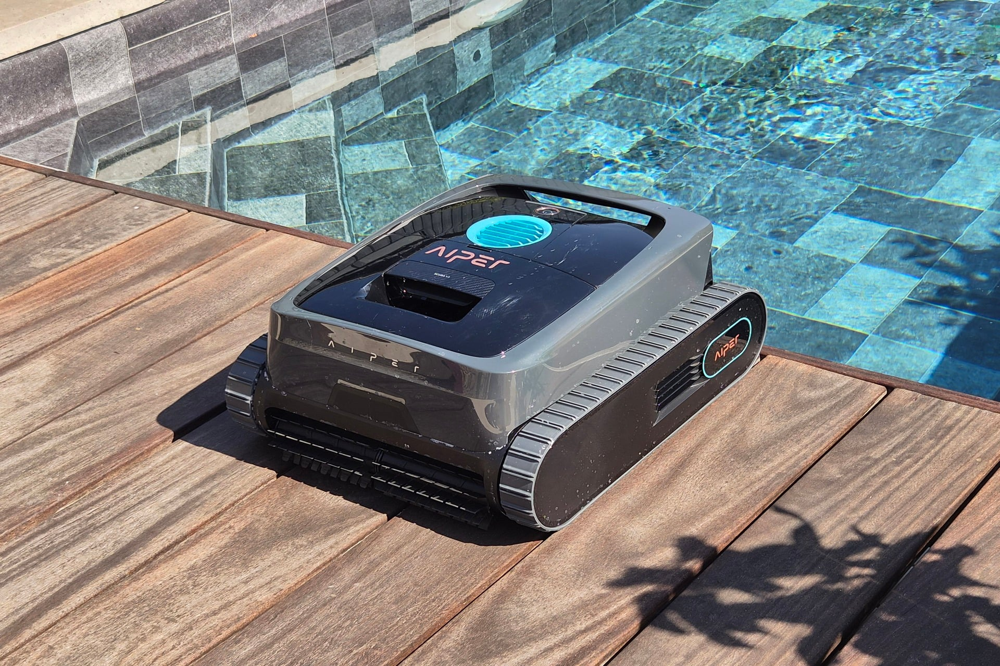

Test Aiper Scuba V3 : le robot piscine avec une caméra pour voir sous l’eau

🛒 En lien avec cet article
Publicité — Liens de partenariat Amazon : une commission peut être reversée, sans surcoût pour vous.
🔥 Top produits tech du moment
🛒 Voir le prix : Logitech MX Master 3S
🛒 Voir le prix : iPhone 16 Pro
🛒 Voir le prix : SSD 1 To Samsung
🛒 Voir le prix : Apple Watch Series 10
Publicité — Liens de partenariat Amazon : une commission peut être reversée, sans surcoût pour vous.
L'intelligence artificielle continue de transformer en profondeur notre quotidien et l'économie. Cette annonce s'inscrit dans une dynamique où les grands acteurs accélèrent leurs investissements et leurs lancements.
Ce qu'il faut retenir
Le Scuba V3 est un robot de piscine qui ne se contente plus de quadriller le fond et les parois.
Aiper lui ajoute, pour la première fois, une caméra et une intelligence artificielle censées affiner son comportement au fil des semaines.
Pour vérifier si ce robot à 1 099 euros s'adaptait réellement à notre piscine, nous l'avons laissé trois mois dans le même bassin.
Pourquoi c'est important
Cette information marque une nouvelle étape dans le développement de l'intelligence artificielle. Elle concerne directement les utilisateurs de technologies numériques et mérite d'être suivie de près dans les prochaines semaines. Test Aiper Scuba V3 : le robot piscine avec une caméra pour voir sous l’eau est ainsi un signal à prendre en compte pour comprendre les évolutions du secteur.
En résumé
Retenez l'essentiel : Test Aiper Scuba V3 : le robot piscine avec une caméra pour voir sous l’eau. Cette actualité a été rapportée par 01net. Nous continuerons de suivre ce sujet et de vous tenir informés des prochaines évolutions.
🚀 Vous êtes freelance tech ?
Calculez votre TJM en 30 secondes : micro-entreprise, SASU, EURL ou portage salarial. Gratuit, taux 2025.
Calculer mon TJM →Source : 01net